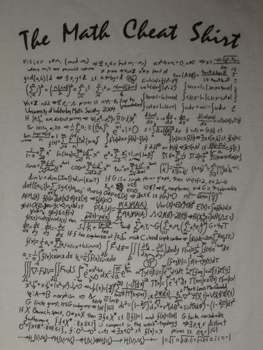
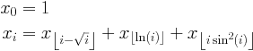

Problem E: sqrt log sin

An evil professor has just assigned you the following
problem.
A sequence is defined by the following recurrence:

Determine x1000000.
Input Specification
Input consists of a number of lines, each containing one integer,
a value of i, no less than zero and no greater than one million.
Input is followed by a single line
containing the integer -1. This last line is not a value
of i
and should not be processed.
Sample Input
0
-1
Output Specification
For each value of i in the input (but not the final -1),
output the corresponding value of xi modulo 1000000.
Output for Sample Input
1
Malcolm Sharpe, Ondřej Lhoták

This work is licensed under a Creative Commons Attribution-ShareAlike 3.0 Unported License.